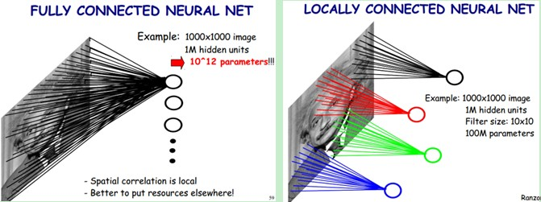
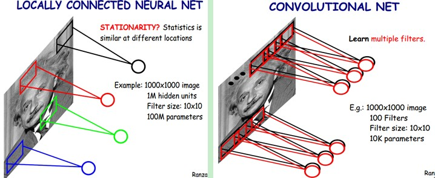
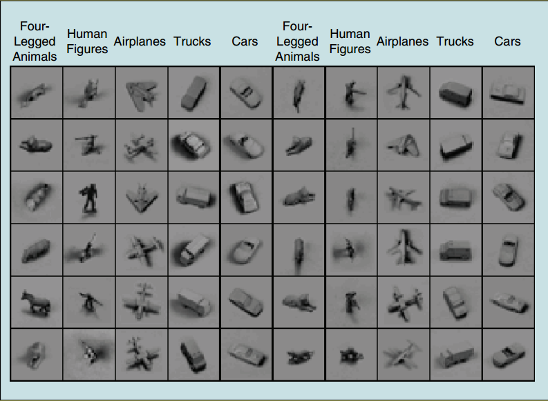
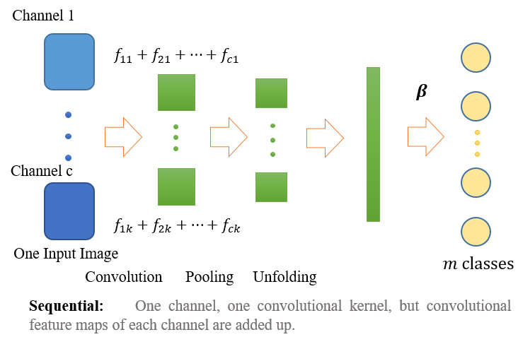
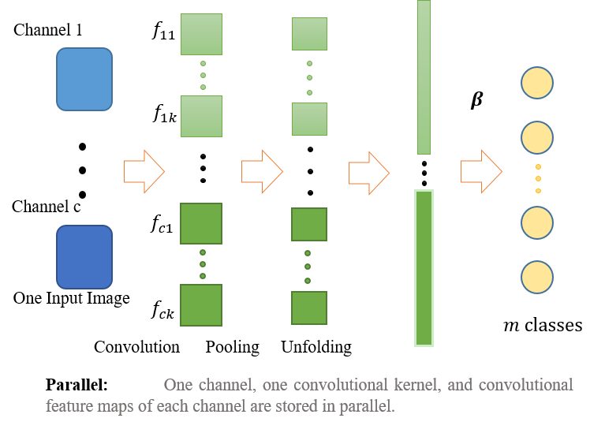
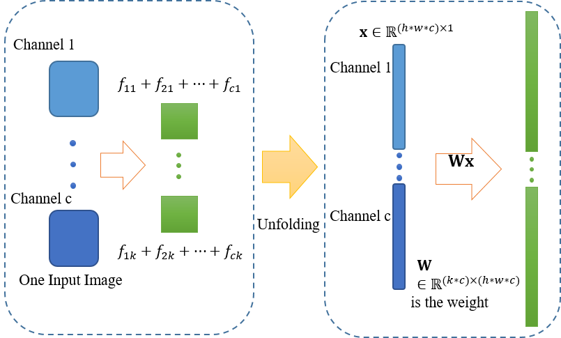
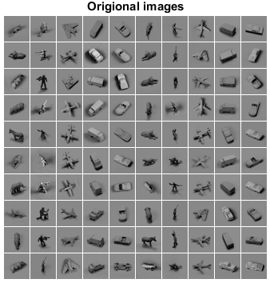
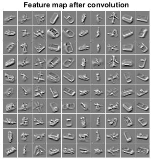
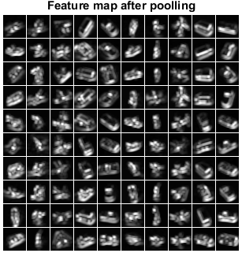

6.2. 基于局部感受野的极速学习机¶
6.2.1. 说明¶
本文是”Local Receptive Fields Based Extreme Learning Machine”1 的学习笔记.
文章主要包含两部分内容, 极速学习机(也有人译作极限学习机或极端学习机, Extreme Learning Machine, ELM)和局部感受野(Local Receptive Fields, LRF).
极速学习机( 也有人译作极限学习机或极端学习机, Extreme Learning Machine, ELM )实际上是一种单隐层前馈神经网络(Single-hidden Layer Feedforward Neural networks, SLFNs) 2, 由南洋理工大学黄广斌教授于2004年提出, 请参见主页. ELM可用于特征学习(feature learning), 聚类(clustering), 回归(regression)和分类(classification).
6.2.2. 摘要内容¶
传统观点：神经网络的隐藏层神经元需要在训练阶段迭代调整.
ELM理论打破了这种信条, 认为隐层神经元虽然很重要, 但不需要迭代调整. 隐藏层节点的所有参数（权重\(\bm W\)和偏置\(\bm b\)）都独立于训练样例, 可以随机的(任意连续概率分布)生成, 这样的ELM依然具有普适的逼近和分类能力( universal approximation and classification ).
文章提出了一种局部连接的ELM的普适结构.
在输入层引入局部感受野;
每个隐层节点可以是几个隐层节点(子网络, sub-network)的组合.
在NORB数据集上, 与传统的深度神经网络作了对比:
将错误率从6.5%降到2.7%
学习速度快了200倍
6.2.3. 引言部分¶
文中提到, 机器学习的成功依赖于三个关键因素:
强大的计算环境(powerful computing environments)
丰富的动态数据(rich and dynamic data)
有效的学习算法(efficient learning algorithms)
传统的诸如BP的训练方法的缺点:
大量的梯度下降搜索操作
慢的收敛速度
容易陷入局部最优
密集的人工干预
ELM克服了这些缺点和限制, 不仅训练时间急剧减少, 学习的精度也非常高.
基于局部感受野的极速学习机( Local Receptive Fields Based Extreme Learning Machine, ELM-LRF )和卷积神经网络(Convolutional Neural Networks, CNNs)在局部连接上相似, 但有两点不同:
局部感受野: ELM-LRF可以灵活的使用由连续概率分布随机生成的不同形式的局部感受野; 而CNN使用固定的卷积隐层节点作为局部感受野.
训练: CNN使用BP算法; 而ELM-LRF的输入权重和偏置可以随机生成, 从而输出权重可以解析地计算.
6.2.4. 回顾ELM, CNN和HTM¶
极速学习机¶
ELM理论 3 4 5 表明, 只要隐层神经元的激活函数是非线性分段连续(nonlinear piecewise continues)的, 神经网络就不需要通过迭代调整网络来获得学习能力.
图 6.3 图1 ELM的结构¶
如上图所示, ELM包含两步: 特征映射和特征学习.
ELM特征映射¶
ELM的输出函数(output function):
其中, \({\bm \beta}_{L\times{m}} =[{\bm \beta}_1, \cdots, {\bm{ \beta}}_L]^T , \; ({\bm \beta}_i = [\beta_{i1}, \cdots, \beta_{im}]^T)\)是隐层与输出层间的输出权重矩阵, \({\bm h}({\bm x}) = [h_1({\bm x}), \cdots, h_L({\bm x})]\)是隐层的输出向量.
其中, \(G({\bm a}_i, b_i, {\bm x})\)是一个非线性分段连续函数.
\({\bm{h}}({\bm{x}})\)实际上是将\(d\)维的输入空间映射到\(L\)维的隐层随机特征空间, 所以\({\bm{h}}({\bm{x}})\)是一个随机特征映射 (feature mapping).
ELM特征学习¶
ELM与传统的学习算法不同, 隐层神经元无需调整, 而且可以得到最小化训练误差和具有最小范数的解：
其中, \(\sigma_1>0, \sigma_2>0, \quad p,q>0\), \(C\)用于控制两项的重要性.
对于给定的训练集\(({\bm x}_i, {\bm t}_i), i=1, 2, \cdots, N\), 用\(\bm H\)表示隐藏层输出矩阵:
\(\bm T\)是训练样例的目标矩阵（target matrix, 由类标构成）：
有很多种方法可以计算权重\(\boldsymbol \beta\), 如正交投影的方法、迭代的方法、和奇异值分解等等.
当\(\sigma_1= \sigma_2= p=q=2\)时, 常用的闭式解（closed-form）为：
定理1：普适近似能力：设激活函数为任意非常数分段连续函数（nonconstant piecewise continuous function）, 如果通过调整隐层神经元的参数可以使SLFNs近似任意目标函数\(f({\bm x})\), 那么可以按照任意连续概率分布函数随机生成序列\(\{h_i({\bm x})\}_{i=1}^L\), 能够找到适当的\({\boldsymbol \beta}\), 使得极限\(\lim_{L\to \infty} ||{\boldsymbol \beta}_i h_i({\bm x})-f({\bm x})||=0\)依概率收敛于1.
定理2：分类能力：设激活函数为任意非常数分段连续函数, 如果通过调整隐层神经元的参数可以使SLFNs近似任意目标函数\(f({\bm x})\), 那么带有随机映射\(h({\bm x})\)的SLFNs可以分离任何形状的任意不相交（disjoint）区域.
卷积神经网络¶
卷积神经网络（Convolutional Neural Network, CNN）是多层前馈神经网络（Multi-Layer Feedforward Neural Network, 也叫多层感知器, MLPs）的变种.
CNN受启发与人类的视觉皮层, 输入至隐藏层采用局部连接.
这是全连接神经网络和局部连接神经网络示意图： 
这是局部连接神经网络与卷积神经网络示意图： 
下图是卷积神经网络结构示意图： 
CNN包含两个基本操作：卷积（convolution）和池化（pooling）, 通常交替排列卷积层和池化层直至获得高级的特征. 上图中的“Subsampling”其实就是池化操作.
卷积神经网络特点
局部连接（网络参数数目减小）
权值共享
采用BP训练（包含BP的弊病）
运算量大
卷积¶
对于一个卷积层, 用\(\gamma\)表示该卷积层的值, 用\(x\)表示其前一层的值, 假设该卷积层前一层的大小是\(d\times d\), 感受野（receptive field）的大小是\(r\times r\), 则
池化¶
为减少特征的维数并引入平移不变性, 在局部区域引入池化操作, 通常有平均池化和最大池化.
平均池化使得提取的特征对微小变形鲁棒, 与视觉感知中的复杂细胞功能类似.
最大池化使得提取的特征具有平移不变性.
池化区域通常是不重叠的.
层级实时记忆¶
层级实时记忆 (Hierarchical Temporal Memory , HTM) 是一个在线式机器学习模型 (an online machine learning model) , 它能发现和推断出观测输入模式或序列的高层次原因. HTM组合和扩展了贝叶斯网络、空时聚类算法中的方法, 同时利用了神经网络中常用的节点的树形层次结构.
图 6.4 层级实时记忆（HTM）网络结构¶
6.2.5. ELM-LRF 原理¶
输入与隐藏层间的连接是稀疏的, 且由相应的局部感受野（对连续概率分布采样得到）包围.
组合节点：通过把几个隐藏层节点组合在一起, 引入平移不变性. （translational invariance）.
A. 全连接与局部连接（Full and Local Connections）¶
ELM理论证明, 隐藏层节点可以按照任意概率分布生成, 这里的随机是指：
输入与隐藏层节点间的连接密度是根据不同类型的概率分布随机采样得到的.
输入与隐藏层节点间的连接权重也是随机生成的.
如下图所示, （a）图为隐藏层节点全连接的形式, 相关的应用研究很多, 且ELM在诸如遥感、时间序列分析、文本分类、行为识别等应用领域取得了最高水平的性能.
图 6.5 图6 全连接与局部连接¶
然而, 上面的工作仅关注于权重的随机, 忽略了连接也可以随机的属性. 自然图像和语言的强的局部关系, 使得全连接很不适合.
B. 基于局部感受野的ELM¶
如上图中（b）图所示, 输入层与一个隐藏层节点\(i\)间的连接是根据连续概率分布随机生成的, 这种随机的连接也就构成了局部感受野.
当ELM-LRF应用于图像处理等相似任务时, 它学习图像的局部结构并在隐藏层生成更为有意义的表示.
6.2.6. 局部感受野的实现¶
A. ELM-LRF的特殊组合节点¶
尽管ELM中可以使用各种不同的局部感受野和组合节点, 为了方便实现, 文章中采用特殊的局部感受野和组合节点如下图：
图 6.7 图8 文中实现的ELM-LRF结构¶
采样分布：采用简单的阶梯概率函数（Simple Step Probability Function）；
组合节点：平方根池化（square/square-root pooling）结构；
局部感受野：每个隐层节点的局部感受野由距中心一定距离内的输入节点组成；
卷积操作：对于不同隐藏层节点, 共享输入权重实现卷积操作.
B. 随机输入权重¶
为了获得输入的充分表示（thorough representations）, 采用\(K\)个不同的输入权重, 从而得到\(K\)个互异的特征图：
图 6.8 带有K个特征图的ELM-LRF网络的实现¶
其中,
隐藏层由随机卷积节点组成；
同一特征图（Feature Map）共享同一输入权重, 不同特征图输入权重不同；
输入权重随机生成并正交化, 正交化的输入权重可以提取更为完备的特征.
输入权重的生成与正交化操作：
随机生成初始权重\(\hat{\bm{A}}^{\rm init}\). 设输入大小为\(d\times d\), 感受野大小为\(r\times r\), 那么特征图的大小为\((d-r+1)\times(d-r+1)\). 注：文章采用标准高斯分布, 且不包含偏置, 因为它不需要.
正交化初始权重\(\hat{\bm{A}}^{\rm init}\). 采用奇异值分解（SVD）正交化, 正交化的初始权重记为\(\hat{\bm A}\), 它的每一列\(\hat{\bm a}_k\)都是\(\hat{\bm{A}}^{\rm init}\)的正交基. 注意, 当\(r^2<K\)时, 先转置, 再正交化, 然后转置回来.
第\(k\)个特征图的输入权重是\({\bm a}_k \in {\mathbb R}^{r\times r}\), 由\(\hat{\bm a}_k\)逐列排成. 第\(k\)个特征图的卷积节点\((i,j)\)的值\(c_{i,j,k}\)由下式计算：
C. 平方根池化（square/square-root pooling）结构¶
池化大小\(e\)表示池化中心到边的距离, 且池化图（pooling map）与特征图大小相同（\((d-r+1)\times(d-r+1)\)）. \(c_{i,j,k}\)和\(h_{p,q,k}\), 分别表示第\(k\)个特征图中的节点\((i,j)\)和第\(k\)个池化图中的组合节点\((p,q)\).
平方与求和操作：网络引入非线性校正（rectification nonlinearity）和平移不变性（translation invariance）的特性；
卷积操作后紧跟平方/平方根池化结构：使网络具有频率选择性（frequency selective）和平移不变性（translation invariance）；
因而非常适合于图像处理.
D. 基于输出权重的闭式解¶
池化层与输出层全连接, 输出权重\(\bm{\beta}\), 采用正则化最小二乘（Regularized Least-Squares）法解析地计算.
对于每一个输入样例\(\bm x\), 使用 式.6.1 计算特征图的值, 然后使用 式.6.2 计算池化图（即组合层）的值. 简单地连接所有组合节点的值形成一个行向量, 并把\(N\)个输入样例的行向量放在一起, 得到组合层矩阵\({\bm H}\in {\mathbb R}^{N\times K \cdot (d-r+1)^2}\), 输出权重矩阵计算为:
if \(N\le K\cdot (d-r+1)^2\)
\[\bm{\beta}={\bm H}^T({{\bm I}\over{C}}+{\bm H}{\bm H}^T)^{-1}{\bm T} \]if \(N > K\cdot (d-r+1)^2\)
\[\bm{\beta}=({{\bm I}\over{C}}+{\bm H}^T{\bm H})^{-1}{\bm H}^T{\bm T} \]
6.2.7. 讨论¶
A. 普适近似和分类能力¶
输入与隐藏层节点间的连接, 是根据不同类型的连续概率分布随机采样构建的, 这样的网络依然具有普适近似能力和分类能力.
输入与隐藏层节点间没有连接的, 可以认为连接权重不重要以至于可以忽略, 因而仍然可以认为分布函数是连续的, 可以保持网络的普适近似与分类能力.
ELM中的隐藏层节点可以是不同节点的线性或非线性组合.
由于隐藏层节点的激活函数是非线性分段连续的, 所以第\(k\)个池化图\(h_{p,q,k}\)中的组合节点\((p,q)\), 仍然可以表示成ELM隐层节点的基本形式：
在平方根池化结构中, \(G\)显然是非线性分段连续的, 所以ELM-LRF仍然保留了普适近似与分类能力, 从而可以学习输入数据更为复杂的特征.
B. ELM-LRF与HTM和CNN的关系¶
ELM-LRF与HTM：在通过构造一层一层的学习模式, 来模拟大脑处理逐渐复杂的输入形式上是相似的；然而, ELM-LRF更为有效, 因为ELM-LRF网络的连接和输入权重都是随机生成的, 而HTM需要仔细设计网络和调整参数.
ELM-LRF与CNN：它们都直接处理原始输入, 并利用局部连接来限制网络学习诸如自然图像和语言中的空间相关性. 它们的不同是：
局部感受野：ELM-LRF更为灵活和宽泛, 可以根据不同类型的概率分布随机采样生成, 而CNN只使用卷积隐藏层节点；尽管本文仅使用随机卷积节点作为ELM-LRF的特殊的局部感受野, 研究其它类型的感受野也是很有价值的.
训练：CNN中的隐藏层节点需要调整, 而通常采用BP算法, 这使得CNN面临BP中的琐碎问题, 如：局部最优, 慢的收敛速度. 而ELM-LRF随机生成输入权重并解析地计算输出权重. 也就是计算主要是输出权重的计算, 从而ELM-LRF更为高效.
6.2.8. 实验¶
实验数据 ELM-LRF与Deep Learning的方法进行了对比, 数据集选择目标识别数据集：NORB. NORB包含24300幅训练用立体图像（stereo image）和24300幅测试用立体图像, 每个都有5类并且很多都进行了3D和光照处理. 下图是NORB数据集中的60个样例, 每个样本有两幅图, 物体尺寸是归一化的, 背景也是一致的. 文中进行了下采样到\(32\times 32\)的操作. 
实验平台与参数 实验平台：MATLAB2013a, Intel Xeon E5-2650, 2GHz GPU, 256GB RAM. 参数：感受野大小\(\{4\times 4,6\times 6\}\)；特征图的数量\(\{24,36,48,60\}\)；池化大小\({1,2,3,4}\)；\(C\) 的值\(\{0.01,0.1,1,10,100\}\), 采用5倍交叉验证, 来选择参数, 最优参数如 表 6.1 所示.
DATASET |
# OF TRAINING DATA |
# OF TESTING DATA |
INPUT DIMENSIONS |
RECEPTIVE FIELD |
# OF FEATURE MAPS |
POOLING SIZE |
C |
|---|---|---|---|---|---|---|---|
NORB |
24300 |
24300 |
\(32\times 32\times 2\) |
\(4\times 4\) |
48 |
3 |
0.01 |
A. 测试误差¶
如 表 6.2 所示, ELM-LRF要比其它微调的算法的精度更高, 而且耗时少. 与CNN和DBN的方法相比, ELM-LRF将错误率从\(6.5\%\)降到\(2.74\%\).
ALGORITHMS |
TEST ERROR RATES |
|
|---|---|---|
ELM-LRF |
2.74% |
|
ELM-LRF (NO ORTHOGONALIZATION) |
4.01% |
|
RANDOM WEIGHTS (ELM FEATURE MAPPING + SVM CLASSIFIER) |
4.8% |
|
K-MEANS + SOFT ACTIVATION |
2.8% |
|
TILED CNN |
3.9% |
|
CNN |
6.6% |
|
DBN |
6.5% |
B. 训练时间¶
公平起见, 其它的算法也运行在本实验平台, 如 表 6.3 所示, ELM-LRF学习速度比其它算法快至200倍.
ALGORITHMS |
TRAINING TIM(s) |
SPEEDUP TIMES |
|
|---|---|---|---|
ELM-LRF |
394.16 |
217.47 |
|
ELM-LRF (NO ORTHOGONALIZATION) |
391.89 |
218.73 |
|
RANDOM WEIGHTS (ELM FEATURE MAPPING + SVM CLASSIFIER) |
1764.28 |
48.58 |
|
K-MEANS + SOFT ACTIVATION |
6920.47 |
12.39 |
|
TILED CNN |
15104.55 |
5.67 |
|
CNN5 |
53378.16 |
1.61 |
|
DBN |
85717.14 |
1 |
C. 特征图¶
下图显示了一个样本的48个特征图. 可以看出, 这些特征图的轮廓线相似的, 这是由于它们来自同一幅输入图像. 然而每个图都有自己明显突出的部分, 这就获得了原始图像的互异表示, 就原始图像的不同抽象, 使得分类变得容易和准确.
图 6.9 图11 一个样例：（a）原始图像；（b）48个特征图¶
D. 随机输入权重的正交化¶
实验中也分析了随机输入权重的正交化的贡献. 以48个特征图中的卷积节点中心的值为例, fig-RandomWeightsOrthogonalizationELMLRF 显示了48个特征图中, 中心卷积节点的值在对输入权重正交化前后的变化分布.
由 fig-RandomWeightsOrthogonalizationELMLRF 可以看出, 正交的随机权重的分布更均匀, 特征图中的其它位置的卷积节点也是如此. 所以正交化使得物体更加线性独立和易分类的. 不过, 即使不正交化, 仍能获得\(4.01\%\)的测试误差与传统方法相比, 减少了\(38\%\).
6.2.9. 结论¶
ELM中引入局部感受野来学习局部结构；
组合节点的引入使网络具有平移不变性；
输入权重随机生成, 然后进行正交化, 这样可以提取更为完备的特征；
输出权重可以解析地计算, 计算复杂度低；
局部感受野的形式多样；
随机卷积节点可以作为ELM的一个有效的局部感受野实现方法；
实验表明, 无论在精度上还是学习速度上, ELM-LRF都远优于传统的深度学习方法.
进一步的工作：
ELM的不同类型的局部感受野的影响；
ELM的不同卷积节点的影响；
堆栈式ELM-LRF, 可以通过在前一组合层后采用局部连接来堆叠ELM-LRF.
6.2.10. 代码实现¶
Source Code¶
Experimental Results¶
MNIST数据集¶
数据集：MNIST, 28*28, uint8, 60K训练, 10K测试
硬件：Intel i5-3210M 2.5GHz 双核四线程（实验中只用单线程）
软件：MATLAB
参数： C = [0.001 0.01 0.1 0.2 0.3 0.4 0.5 0.6 0.7 0.8 0.9 1]; 卷积核：\(5\times5\), 特征图个数：10, 池化窗口\(3\times3\).
注：由于笔记本内存仅有4G, Matlab无法开出:math:`60K times 60K `的矩阵, 仅用前10K个作为训练.
结果如下：
With C = 0.001000
-----------------------------------------
Training error: 0.030900
Training Time:95.156250s
Testing error: 0.035800
Testing Time:16.250000s
With C = 0.010000
-----------------------------------------
Training error: 0.014400
Training Time:94.109375s
Testing error: 0.031900
Testing Time:14.859375s
With C = 0.100000
-----------------------------------------
Training error: 0.005000
Training Time:93.234375s
Testing error: 0.031700
Testing Time:14.750000s
With C = 0.200000
-----------------------------------------
Training error: 0.003200
Training Time:92.484375s
Testing error: 0.032500
Testing Time:15.000000s
With C = 0.300000
-----------------------------------------
Training error: 0.002500
Training Time:92.718750s
Testing error: 0.033700
Testing Time:14.953125s
With C = 0.400000
-----------------------------------------
Training error: 0.002400
Training Time:93.937500s
Testing error: 0.034500
Testing Time:14.578125s
With C = 0.500000
-----------------------------------------
Training error: 0.002200
Training Time:91.828125s
Testing error: 0.035000
Testing Time:14.828125s
With C = 0.600000
-----------------------------------------
Training error: 0.002100
Training Time:93.453125s
Testing error: 0.035400
Testing Time:14.781250s
With C = 0.700000
-----------------------------------------
Training error: 0.001900
Training Time:92.218750s
Testing error: 0.035800
Testing Time:14.625000s
With C = 0.800000
-----------------------------------------
Training error: 0.001700
Training Time:93.531250s
Testing error: 0.036500
Testing Time:16.421875s
With C = 0.900000
-----------------------------------------
Training error: 0.001500
Training Time:93.343750s
Testing error: 0.037100
Testing Time:15.359375s
With C = 1.000000
-----------------------------------------
Training error: 0.001400
Training Time:95.015625s
Testing error: 0.037500
Testing Time:15.109375s
哈哈, 效果不错！
NORB数据集¶
2016年3月11日补充：
一个月前升级了内存条, 今天又看到有国外童鞋Email问我文章中是如何处理对待NORB数据集的, 它是个双通道的, 即\(32\times 32\times 2 \times 24300\), 这个文中没有细说, 我之前实现的代码也只是单通道的, 所以今天又重新看了一下, 并更新了代码, 在这里下载.
论文中代码结果¶
先看看https://github.com/ExtremeLearningMachines/ELM-LRF代码（这个应该是文章用的）实验结果. 里面的代码给了两组参数, 第一组参数（load param1）与第二组参数（load param5）中感受野（或卷积核）大小均为\(4\times 4\), 池化大小为\(3\times3\), \(C=0.01\)不同的是特征图的数量, 第一组为\(1\), 第二组为\(48\). 第一组结果如下, 第二组根本不能跑, 内存升级到10G还是不行.
第一组参数运行结果（特征图数1）：
train_accuracy =
0.7687
The testing begins:
test_accuracy =
0.6575
ans =
train_time: 0.7885
test_time: 0.0338
train_accuracy: 0.7687
test_accuracy: 0.6575
time_network: 3.8226
time_transform_test_data: 3.4379
第一组参数运行结果（特征图数3）：
train_accuracy =
0.9627
The testing begins:
test_accuracy =
0.8342
ans =
train_time: 6.5180
test_time: 0.1000
train_accuracy: 0.9627
test_accuracy: 0.8342
time_network: 11.7311
time_transform_test_data: 10.9387
效果提高了好多, 有木有！
本人实现代码结果¶
重写的代码支持多通道图像, 输入为\(H-W-N-C\)的矩阵, 其中\(C\)为图像通道数.
以下图片本人原创 实现了两种处理方式, 一是“sequential”模式, 如下： 
二是“parallel”模式, 如下： 
论文中用的代码（这个应该是文章用的）, 采用的是sequential模型, 且没有直接采用卷积函数计算, 而是将卷积计算转化为矩阵乘积计算\(\bm WX\). 
采用parallel模型, 参数与上述第一组一致, 并使\(C\)取不同的值, 即：\(C = [0.001 0.01 0.1 0.2 0.3 0.4 0.5 0.6 0.7 0.8 0.9 1]\), 结果如下：
特征图数1：
>> pack
>> demo_elmlrf_NORB
With C = 0.001000
-----------------------------------------
Training error: 0.141934
Training Time:9.234375s
Testing error: 0.257778
Testing Time:3.703125s
With C = 0.010000
-----------------------------------------
Training error: 0.074239
Training Time:9.015625s
Testing error: 0.208066
Testing Time:3.718750s
With C = 0.100000
-----------------------------------------
Training error: 0.042140
Training Time:8.906250s
Testing error: 0.216049
Testing Time:3.656250s
With C = 0.200000
-----------------------------------------
Training error: 0.035021
Training Time:8.875000s
Testing error: 0.220206
Testing Time:3.593750s
With C = 0.300000
-----------------------------------------
Training error: 0.031193
Training Time:8.906250s
Testing error: 0.223580
Testing Time:3.687500s
With C = 0.400000
-----------------------------------------
Training error: 0.029342
Training Time:8.812500s
Testing error: 0.226626
Testing Time:3.593750s
With C = 0.500000
-----------------------------------------
Training error: 0.027572
Training Time:8.953125s
Testing error: 0.228354
Testing Time:3.812500s
With C = 0.600000
-----------------------------------------
Training error: 0.026667
Training Time:8.953125s
Testing error: 0.230206
Testing Time:3.625000s
With C = 0.700000
-----------------------------------------
Training error: 0.026420
Training Time:8.812500s
Testing error: 0.231811
Testing Time:3.687500s
With C = 0.800000
-----------------------------------------
Training error: 0.025926
Training Time:8.875000s
Testing error: 0.233539
Testing Time:3.734375s
With C = 0.900000
-----------------------------------------
Training error: 0.025226
Training Time:8.750000s
Testing error: 0.234733
Testing Time:3.656250s
With C = 1.000000
-----------------------------------------
Training error: 0.024609
Training Time:8.921875s
Testing error: 0.236091
Testing Time:3.718750s
特征图数3：
>> demo_elmlrf_NORB
With C = 0.001000
-----------------------------------------
Training error: 0.027284
Training Time:61.468750s
Testing error: 0.114856
Testing Time:14.625000s
With C = 0.010000
-----------------------------------------
Training error: 0.008272
Training Time:64.171875s
Testing error: 0.088724
Testing Time:13.921875s
With C = 0.100000
-----------------------------------------
Training error: 0.001564
Training Time:61.515625s
Testing error: 0.104033
Testing Time:13.281250s
With C = 0.200000
-----------------------------------------
Training error: 0.001070
Training Time:60.546875s
Testing error: 0.111111
Testing Time:12.625000s
With C = 0.300000
-----------------------------------------
Training error: 0.000947
Training Time:58.468750s
Testing error: 0.116831
Testing Time:12.765625s
With C = 0.400000
-----------------------------------------
Training error: 0.000741
Training Time:56.328125s
Testing error: 0.121152
Testing Time:12.281250s
With C = 0.500000
-----------------------------------------
Training error: 0.000700
Training Time:56.671875s
Testing error: 0.123498
Testing Time:12.765625s
With C = 0.600000
-----------------------------------------
Training error: 0.000658
Training Time:61.468750s
Testing error: 0.125021
Testing Time:13.328125s
With C = 0.700000
-----------------------------------------
Training error: 0.000617
Training Time:58.515625s
Testing error: 0.126584
Testing Time:12.828125s
With C = 0.800000
-----------------------------------------
Training error: 0.000576
Training Time:59.359375s
Testing error: 0.127984
Testing Time:12.796875s
With C = 0.900000
-----------------------------------------
Training error: 0.000535
Training Time:60.296875s
Testing error: 0.129136
Testing Time:12.156250s
With C = 1.000000
-----------------------------------------
Training error: 0.000494
Training Time:62.718750s
Testing error: 0.130082
Testing Time:12.750000s
根据实验结果, 可知：
相同参数下, 本人实现的程序比文中略高（精确度）；
相同参数下, 本人实现的程比论文程序更序耗时些, 有待优化, 但容易扩展.
特征图展示：
下面分别贴出NORB数据集前100幅图像的：原图、卷积操作后的特征图、均方根池化后的特征图. 可见隐藏层学习到了数据的特征.
NORB数据集前100幅图像: 
NORB数据集前100幅图像, 卷积后的特征图： 
NORB数据集前100幅图像, 池化后的特征图： 
6.2.11. 参考文献¶
- 1
Huang G, Bai Z, Kasun L, et al. Local Receptive Fields Based Extreme Learning Machine[J]. Computational Intelligence Magazine IEEE, 2015, 10(2):18 - 29.
- 2
Huang G B, Zhu Q Y, Siew C K. Extreme learning machine: a new learning scheme of feedforward neural networks[J]. Proc.int.joint Conf.neural Netw, 2004, 2:985–990.
- 3
Huang G B. Universal approximation using incremental constructive feedforward networks with random hidden nodes.[J]. IEEE Transactions on Neural Networks, 2006, 17(4):879 - 892.
- 4
Huang G B, Chen L, Huang G B, et al. Convex incremental extreme learning machine[J]. Neurocomputing, 2007, 70:3056–3062.
- 5
Huang G B, Chen L. Enhanced random search based incremental extreme learning machine[J]. Neurocomputing, 2008, 71(16-18):3460–3468.